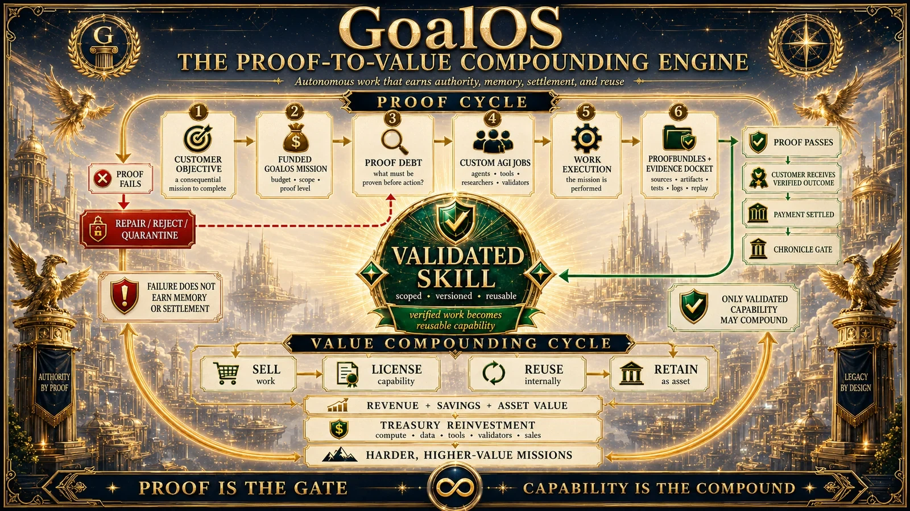

Fondée à Montréal · 2003 · Contrôle fondateur
VÉRIFIER Ω
Vérificateur local de dossiers publics
Rien n’est transmis.
Collez ou chargez un dossier JSON autorisé. Le vérificateur retire le champ sha256 stocké, trie récursivement les clés, recalcule SHA-256 dans le navigateur et compare le résultat.
Vérifier l’intégrité ne prouve pas la vérité hors chaîne.
IntégritéCanonicalisationAucune transmissionNe certifie pas la vérité
Résultat de vérification
SHA-256Aucun dossier chargé.
Un résultat valide signifie que le JSON correspond à son digest selon la procédure publiée. Il ne certifie ni la véracité, ni l’acceptation, ni l’autorité de production.
Vérifier l’intégrité. Puis inspecter la preuve.
Le digest est une porte technique; l’autorité exige encore provenance, contexte, validation et acceptation.
N’envoyez aucune information confidentielle dans le premier message. La portée, l’autorité, les normes de preuve et l’échange sécurisé sont établis avant l’acceptation de matériel sensible.